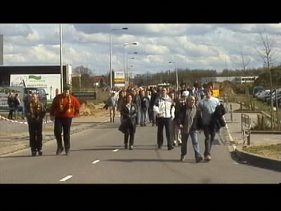
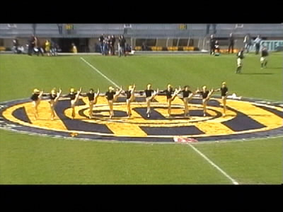
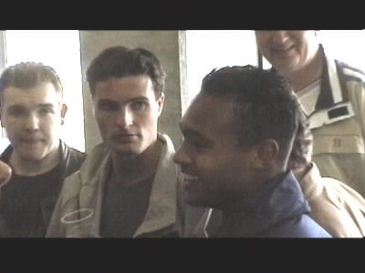
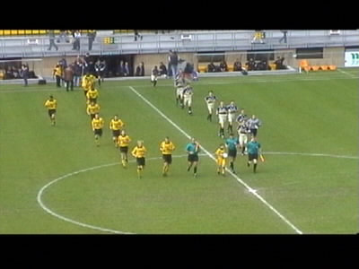
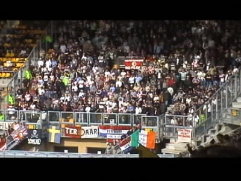
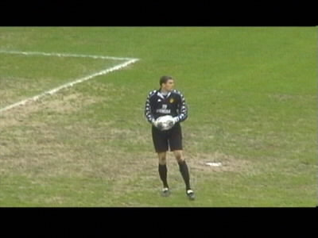
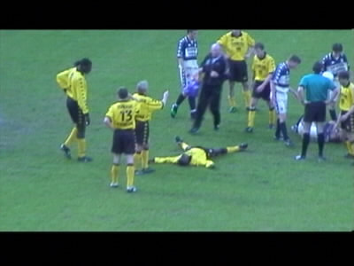
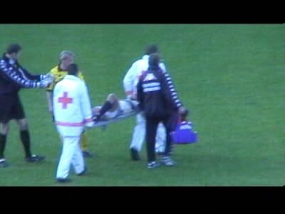
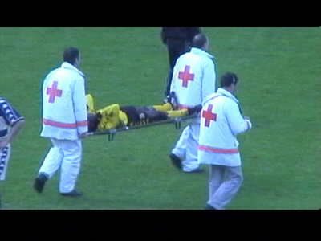
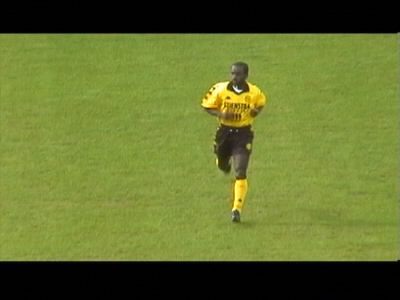

|
Roda JC - Feyenoord 1-0 ( 29 april 2001) deel 1 |

Roda- en Feyenoordsupporters op weg naar het stadion.

Nog geen echte cheerleaders, maar het begint er op te lijken.
Volgende keer graag rokjes in plaats van broeken.

Home is where the heart is! Humprey zat gedurende de wed-
strijd in vak Z16.

De spelers betreden het veld. Feyenoord in een lelijke
smoezelig blauw-witte outfit. Waarom niet in rood-wit?!

De Feyenoord-supporters in het volle gastenvak.

Man of the match. Kalac verrichtte weer een aantal prima
reddingen.

Sonko en Paauwe botsten en raakten beiden "groggy".

Daar gaat Paauwe (keerde kortstondig terug).

Hier gaat Sonko. Hij keerde niet meer terug.

Tchoutang verving Sonko. Eindelijk Tchoutang in het veld!
©KPD